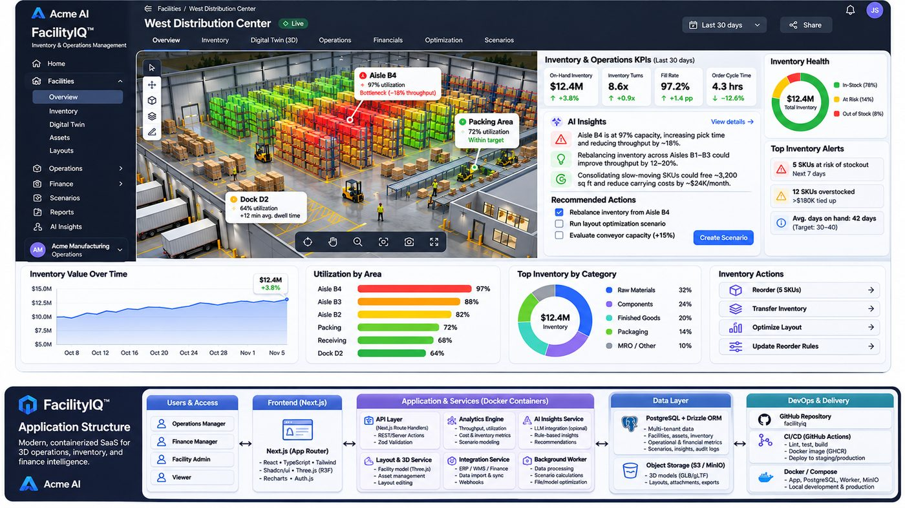

Slack · PMs
AskFeaturePriority
TrackFAIQLinear
HandoffGrok Build
Ramping engineers on a convention-heavy core library
with Grok Build + Grok Bot.
Joe Moeller · SpaceXSI Solutions Architect Technical Screen · Nov 12, 2026
01 · The problem · Maya's platform team
3–4 weeks
to a first mergeable PR
Maya needs
Scaffold a correct first contribution
Catch deprecated APIs, anti-patterns, weak tests before review
Fit CI and guardrails, no boundary crossing
Stay maintainable as the library evolves
Bot front door for PM / QA / DevOps, human approval
02 · Today
03 · Solution architecture
Next.js · Drizzle · Three.js feed the drift loop · FacilityIQ = thin Acme wrapper
04 · One ticket, end to end · hero ticket
getServerSideProps in app/Caught before senior reviewSwitching to Cursor + Grok Bot
Wrapper app · FacilityIQ

05 · Results
3–4 weeks→1 day
TargetsCursor rules, skills, hooks · guard scripts · Slack → Linear → Cloud Agent → PR
Deploy and CI environments
Warehouse data and Acme conventions
06 · Art of the possible · Code Factories
More front doors
Slack · PMs
Grok Bot · QA & Dev Ops
Grok Build (Cursor) · Developers
Maya's brief · also solved
FacilityIQ · Grok Build + Grok Bot
Joe Moeller
Questions?